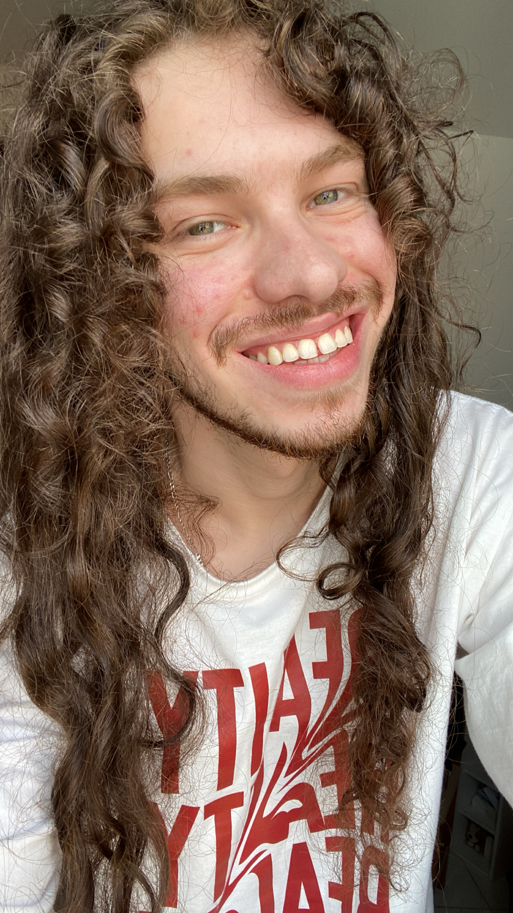

curiosidades sobre Nelson

Me Conheça um pouco Mais!
Trabalho com criação de conteudo para internet,produzindo conteudo
as mais diversas midias sociais,youtube,tiktok,instagram.
Amo a cultura japonesa e desejo viajar para ficar um tempo por lá
Também sou apaixonado pela musica,seja canto,dança ou oor algum instrumento musical.